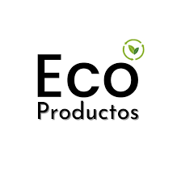
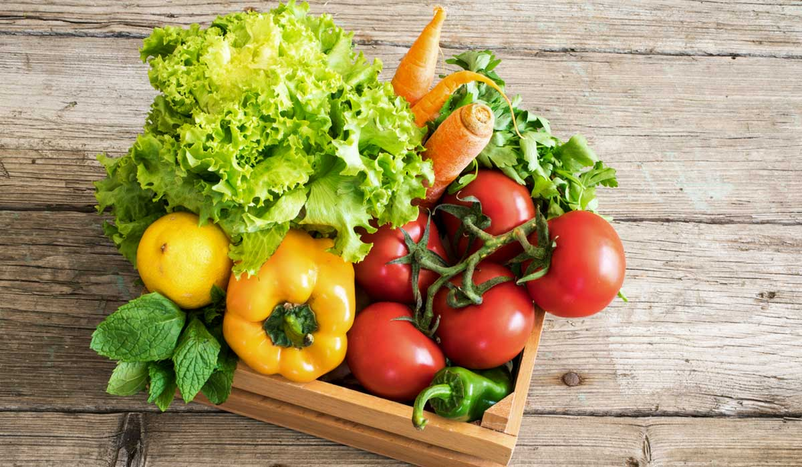
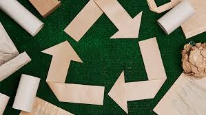

Bienvenidos a la Feria Sustentable
Un espacio para celebrar el cambio hacia una vida más consciente y sostenible. Únete a nosotros para disfrutar de productos locales, talleres y actividades para toda la familia.
Expositores
EcoProductos

EcoProductos se especializa en la venta de productos de limpieza ecológicos y biodegradables. Su misión es reducir el uso de químicos dañinos en el hogar.
Ubicación: Stand 5
Verduras Frescas

Verduras Frescas ofrece una variedad de productos orgánicos cultivados localmente. Apoyan a los agricultores de la región y promueven la alimentación saludable.
Ubicación: Stand 8
Reciclaje Creativo

Reciclaje Creativo transforma materiales reciclados en arte y decoración. Ofrecen talleres para aprender a crear tus propias piezas.
Ubicación: Stand 10
Actividades
- Taller de reciclaje - Sábado 10:00 AM
- Charla sobre sostenibilidad - Sábado 2:00 PM
- Yoga al aire libre - Domingo 9:00 AM
Comunidad
Únete a nuestra comunidad y comparte tus experiencias. Aquí algunos testimonios:
"La feria fue una experiencia increíble, aprendí mucho sobre sostenibilidad."
"Me encantó conocer a otros apasionados por el medio ambiente."
Gastronomía
Disfruta de deliciosas opciones de comida y bebida, todas elaboradas con ingredientes locales y orgánicos.